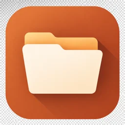

FileManager
Быстрый файловый менеджер для Android
- Сразу к файламОткрывается в вашей папке без индексации и ожидания. Встроенная память, SD-карты и USB.
- Надёжные операцииКопирование, перемещение и удаление папок целиком, с прогрессом в уведомлении. Незаконченная копия никогда не выдаётся за готовый файл.
- Совпадения имён под контролемПропустить, сохранить оба, заменить или объединить папки — решаете вы, ничего не перезаписывается молча.
- ПоискПо именам и по тексту внутри файлов, без фоновой индексации.
- Картинки, ZIP и текстПросмотр изображений, открытие, создание и распаковка ZIP, редактор небольших текстовых файлов.
Без интернета, рекламы и аналитики. Файлы не покидают телефон, пока вы сами их не отправите.
Скоро в Google Play.